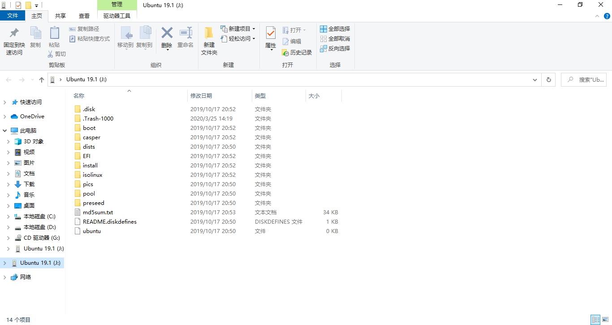

之前看到有个同学直接安装了 Ubuntu 的物理机，我立刻被 Ubuntu 的高度可定制性吸引，于是也想装一个 Ubuntu 物理机玩玩.可是我还是舍不得 Windows（注：笔者使用的是 Windows 10）上的数据.尝试过安装 VMware虚拟机，问题是电脑配置不高，虚拟机运行总会占用大量内存，非常卡.于是我就想着安装双系统.捣鼓了半天，Ubuntu 完美运行.以下是操作步骤.
材料&配置
- Lenovo ideapad 310S
- 一个容量大于等于4GB的空U盘
- Ubuntu 19.10 的映像文件(官网下载 网址:https://ubuntu.com/download).
- UltraISO软碟通(官网下载 网址:https://cn.ultraiso.net/).
操作
一.在硬盘中划分出一段空间供Ubuntu使用.
- 右键单击 此电脑，左键单击 管理，在 弹出窗口左边栏 找到 存储 → 磁盘管理。此时，中间栏会出现你的电脑的磁盘分区.
- 左键单击选中要压缩的分区，右键单击，左键单击 压缩卷。这里我在 D盘 空出50GB(注：50GB=51200MB)的容量来供 Ubuntu 使用.
- 压缩完以后会发现多出了一段空白的空间.不要做任何操作(由于截图上的电脑已经安装了 Ubuntu，所以截图上显示多出来的50GB空间为 主分区.若按照正常操作，应该显示 空闲).
- 按照上文的网址下载 Ubuntu 19.10 映像文件(.iso) 和 UltraISO软碟通.
- 启动 UltraISO软碟通安装程序，按照步骤安装软件.
- 安装完以后用 UltraISO软碟通 打开我们下载的映像文件.
- 打开后左键单击 启动，左键单击选择 写入硬盘映像... .
- 在驱动器中选择我们的空U盘.U盘内所有数据将被抹去.
- 左键单击 写入，等待 写入完后左键单击选择 返回.关闭软件 这时我们看到的U盘已经是如图这样了. 
- 不要拔出U盘，重启电脑.
- 在计算机的启动界面(注：是计算机启动界面，不是Windows启动界面)同时按下Fn+F12(部分电脑是只按F12)，进入启动盘选择.
- 按上下键选择一个开头为USB的选项，按Enter键进入.
- 之后就开始准备安装了.在左边语言栏找到 简体中文，发现右边栏有两个选项，选择直接安装.
- 之后按照自己的需要选择选项，在 硬盘 一栏中选择第一个选项：安装 Ubuntu 与 Windows 10 共存.
- 等待安装结束，重启电脑，在引导界面选择 Ubuntu 就可以进入 Ubuntu系统了. 原谅我没有截图，讲的应该够清晰了😝
参考
没有参考，除了"进入启动选择的方法"是百度的之外，完全是自己摸索的.